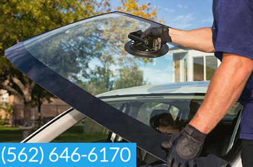

Auto Glass in Lakewood Area Car Glass Replacement in Lakewood Cost Mobile Auto Glass in Lakewood Quote Windshield Replacement in Lakewood Area Car Glass Replacement in Lakewood Today Windshield Replacement in Lakewood More Mobile Auto Glass replacement in Lakewood Service Mobile Windshield Replacement in Lakewood City Mobile Car Glass Replacement in Lakewood Shop

We provide same day service for auto glass replacement and windshield replacement service. Call us for an estimate and book your a pointment today. Our agents area available to answer any questions about your auto glass repair needs.
Auto Glass in Lakewood Area
Car Glass Replacement in Lakewood Cost
Mobile Auto Glass in Lakewood Quote
Windshield Replacement in Lakewood Area
Car Glass Replacement in Lakewood Today
Windshield Replacement in Lakewood More
Mobile Auto Glass replacement in Lakewood Service
Mobile Windshield Replacement in Lakewood City
Mobile Car Glass Replacement in Lakewood Shop
If you are in need of mobile auto glass services in Lakewood California, you can count on us to provide you with high-quality windshield replacement and auto glass replacement services. With over 12 years of experience, our team of auto glass experts are highly skilled in handling any kind of auto glass replacement needs you may have. Our mobile auto glass services are specifically designed to meet all your auto glass needs, and we provide free mobile service in the Lakewood California area. Our fully equipped mobile units are always ready to come to your location, whether that be your home, office, or roadside location. Our mobile auto glass services are convenient, fast, and affordable. We understand that a damaged or broken windshield can sometimes make it difficult or even impossible for you to drive your vehicle, which is why our team is just a phone call away, ready to come to your location as quickly as possible. At our company, we pride ourselves on using the highest quality materials and equipment for all our auto glass replacement services. We vacuum all shattered glass, and our windshields are made from safety laminated glass and tempered glass windows. We ensure that our replacement glass meets all safety standards so that you can drive away with confidence. We offer premium quality glass and OEM equivalents – you can trust our team of experts to use the best glass options for your specific vehicle. Our top priority is ensuring that your windshield or auto glass is replaced with the best materials so that it can withstand any kind of weather or driving conditions. We specialize in replacing windshields for rain-sensing vehicles and can also install Lane Departure Warning System windshields. These advanced systems require specialized windshields, and we have the knowledge and expertise to handle these unique auto glass replacements. With our mobile car glass service and affordable pricing, you can have peace of mind knowing that our team of experts is just a phone call away whenever you need us. Our mission is to provide the best mobile auto glass services to our valued customers in Lakewood California, and we take pride in providing quick and efficient auto glass solutions. It's important to note that a broken or damaged windshield not only poses a safety risk – it can also lead to legal violations. It is illegal to drive with a damaged windshield as it can obscure the driver's view. You can trust our team of professionals to replace your windshield efficiently and safely, so you can avoid any legal issues while on the road. In conclusion, if you reside in Lakewood California and are in need of auto glass replacement services, look no further than our mobile auto glass services. Our team is dedicated to providing high-quality and affordable auto glass solutions, backed by our years of experience and commitment to your safety. Whether you need a windshield replacement, auto glass replacement, or any other kind of car glass replacement, our team of experts is just a phone call away. Contact us today for more information and to schedule an appointment.
Give us a call — we're happy to answer any questions.
Call Now · (562) 646-6170